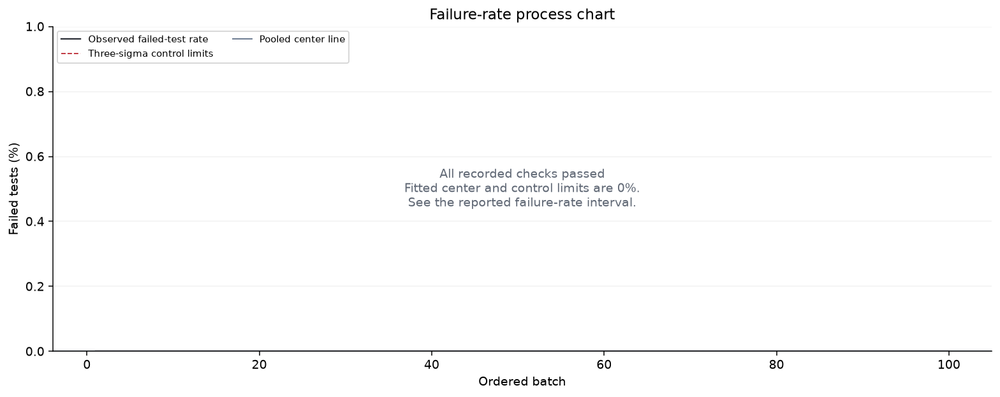
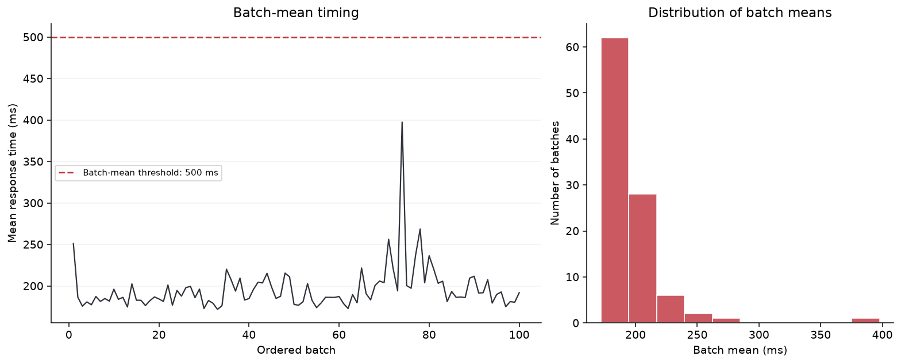

Macro dataset quality analysis
Recorded ForeverMart website checks · Failure-rate control chart, timing analysis and simulation verification
Independent ForeverMart macro dataset: 100 recorded batches of website checks. These are measured project data, not stored textbook exercises. Failed checks do not necessarily represent unique software defects. No textbook answer comparison is performed.
Source: https://forevermart.vercel.app/ · Recorded: 2026-10-11T13:10:59.785200+00:00. HTTP measurements include client, network and hosting latency; they are not isolated server execution times. Stored checks are a dated sample, not a live monitor.
Dataset summary
| Recorded batches | 100 |
|---|---|
| Test executions | 300 |
| Passed / failed tests | 300 / 0 |
| Pooled failed-test rate | 0% |
| 95% Wilson interval | 0%–1.264% |
| Execution-weighted mean response | 195.98 ms |
| Median of batch means | 187.5 ms |
| 95th percentile of batch means | 236.59 ms |
| Batch-mean threshold | 500 ms |
| Batches above timing threshold | 0 |
| Original batches outside p-chart limits | 0 |
| Chart groups outside group limits | 0 of 100 |
A failed test execution is not necessarily a unique software defect. Repeated failures may have the same cause. Percentiles above describe batch means, not individual response times.
Recorded-data provenance
| Project URL | https://forevermart.vercel.app/ |
|---|---|
| Collection started (UTC) | 2026-10-11T13:10:59.785200+00:00 |
| Collection finished (UTC) | 2026-10-11T13:13:04.363602+00:00 |
| Collection method | Sequential read-only HTTPS GET requests; three requests per CSV batch. |
| Passing-check definition | Pass: HTTP 200, HTML content type, and a React root element in the returned document. |
| Timing definition | Client-observed elapsed milliseconds including connection/TLS, network and downloading the HTTP response; not browser rendering or server-only processing time. |
| Project scope | Micro: repeated homepage checks. Macro: broader checks across eight public page routes. These are relative project scopes, not an industrial Big Data dataset. |
| Routes in this dataset | /, /collection, /about, /contact, /cart, /login, /orders, /place-order |
| Raw check log | data/forevermart_http_checks.json |
- A returned React document shell does not establish that the rendered route, login, cart or checkout works.
- Checks are serial observations from one client and one capture window; they are not a concurrency or load test.
- Failure counts are failed HTTP checks, not distinct software defects.
- A zero observed failure count does not prove that the true failure probability is zero.
- The 500 ms threshold in the form is an editable study target, not a verified ForeverMart service-level agreement.
Failure-rate process monitoring

Every chart point represents one original batch.
Original-batch signals: No individual batch crossed the fitted limits.
Limits are fitted to this same dataset and are exploratory. An outside-limit signal prompts investigation; no signal does not prove control or acceptable quality. Low failure counts may require exact binomial limits instead of the approximate three-sigma chart.
Response-time exploration

The red threshold is your criterion for each batch's mean response time. Batches above it need review. This threshold is a requirement, separate from statistical control limits. No individual latency or SLA percentile claim is made from batch means.
Simulation verification
1. Failure-count model
Draw 100,000 independent synthetic batches of 3 tests at the fitted failure probability. Compare the simulated fraction outside this batch's limits with the exact binomial tail probability.
| Representative batch size (rounded median) | 3 |
|---|---|
| Random trials | 100,000 |
| Exact binomial outside-limit probability | 0% |
| Monte Carlo outside-limit estimate | 0% |
| 99% Wilson interval for simulation | 0%–0.00663% |
| Absolute probability difference | 0 |
| Exact probability within simulated interval | Yes |
No failures were recorded, so the fitted binomial model has p = 0 and its simulated outside-limit probability is zero. This conditional result does not show that the website can never fail; use the reported Wilson upper bound and gather broader test evidence.
Seed: 20260901. The 99% interval describes Monte Carlo sampling uncertainty, conditional on the fitted model; it excludes uncertainty in the fitted rate. Repeated tests may be correlated, and changing systems may violate this model.
2. Response-time empirical resampling
Draw 100,000 recorded batch means with replacement. Each batch is selected with probability equal to its execution count divided by total executions. The simulated average should approach the recorded execution-weighted mean.
| Recorded execution-weighted mean | 195.9794 ms |
|---|---|
| Simulated weighted empirical mean | 195.9 ms |
| Absolute mean difference | 0.0795 ms |
| 99% interval for Monte Carlo mean error | 195.6822–196.1177 ms |
| Recorded weighted mean within interval | Yes |
This interval measures random simulation error around the fixed recorded-data mean. It is not a population confidence interval or a bootstrap confidence interval, and these draws are batch means, not individual request latencies. More trials reduce simulation noise; they do not add real test evidence.
Formulas and interpretation
Count-weighted calculations
nᵢ = passedᵢ + failedᵢp̄ = Σfailedᵢ / Σnᵢpᵢ = failedᵢ / nᵢ
LCLᵢ = max(0, p̄ − 3√[p̄(1−p̄)/nᵢ])UCLᵢ = min(1, p̄ + 3√[p̄(1−p̄)/nᵢ])
Weighted timing mean = Σ(nᵢ × mean_msᵢ) / Σnᵢ
Practical QA follow-up
- Investigate flagged batches using logs, test IDs, build versions and execution environment.
- Separate product failures from flaky tests, unavailable services and invalid test data.
- Record a defect with reproduction steps and a corrective action when a product issue is confirmed.
- Retest the fix and compare later batches against a suitable stable baseline.
The micro/macro labels describe analysis scale. Quality assurance is the wider prevention and process discipline; quality control measures outputs. They do not mean small data versus big data, and 10,000 rows alone do not constitute a Big Data architecture.
Analysis assumptions
- Rows are ordered batches as supplied; no dates or chronological order are inferred from labels.
- Passed and failed are mutually exclusive exhaustive outcomes in each batch. All counts are retained.
- Each response_ms value is that batch's mean measured on the same executions represented by its count.
- Failure-rate intervals and binomial simulation assume independent comparable test outcomes. Mixed suites and correlated reruns can make that assumption unsuitable.
- ForeverMart data come from the stored, dated HTTP check collection. An HTTP content or response check does not exercise all browser interactions, and repeated route checks may be correlated. HTTP success does not prove that the application is defect free.
Tools: Python · NumPy (aggregation, random generation) · SciPy (binomial probabilities, Wilson quantiles) · Matplotlib (charts). No textbook answer is available for an independent dataset.
Formula references: NIST p-chart guidance · ASQ quality assurance and quality control.